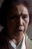

Also known as:座頭市の歌が聞える (original title)
Country:Japan, 83 minutes
Spoken languages:Japanese
Genres:Action, Drama
Director(s):Tokuzō Tanaka
Writer(s):Hajime Takaiwa
Video Codec:Unknown
Number: 2819


Certification:
Storyline:
Zatoichi comes upon a dying man who asks him to give a bag of money to "Taichi". Zatoichi has no idea who this is but when he comes upon a small town harassed by gangsters, he finds that "Taichi" was the man's young son. Along his travels he also met a blind monk who makes Zatoichi question his murderous lifestyle. In trying to help the town, Zatoichi kills some gangsters and becomes a hero to the boy. He must make a choice of whether to use non-violence and set a good example, or violence and set the boy on the wrong path in life.
Cast: 


Medium: Bluray,
Comments: Part of: Zatoichi - The Blind Swordsman collection
Loaned: No
Aspect ratio: Unknown